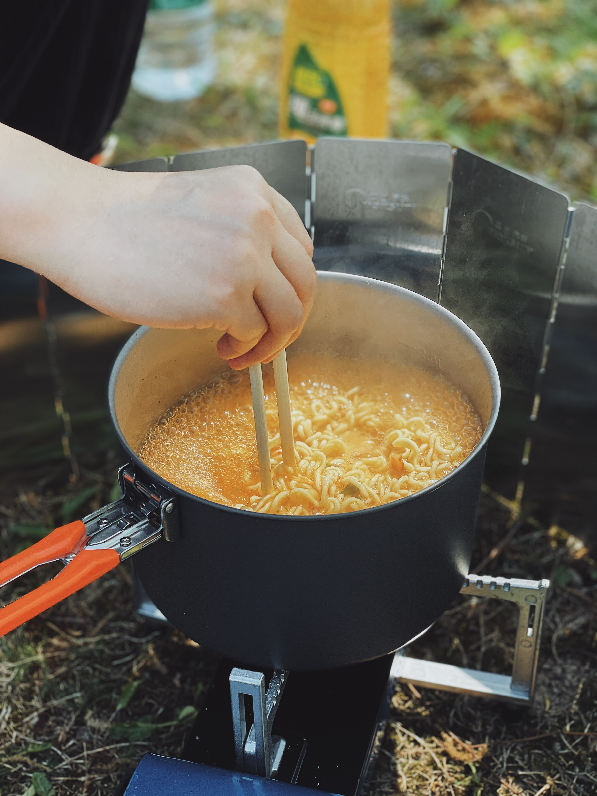

how to make shin ramyun

description
in this recipe i will be showing you how i make shin ramyun
this is a good meal for when you want to eat something hot and salty and soupy that's quick and easy to make
ingredients
- 1 packet shin ramyun
- 1 egg
- ha that's it
steps
- boil a pot of water. not too much bc you don't want your soup to be too diluted
- when water is boiling, add noodles in
- allow noodles to cook in the boiling water, occasionally stirring and seperating the noodles
- push the noodles to the side and add seasoning packet into water. stir until all seasoning is dissolved
- before noodles are fully cooked, push them to the side again and crack an egg into the soup. i prefer to turn down before doing this so you don't get huge boiling bubbles of water and your egg also doesn't cook so quickly, so you can still get a nice runny yolk
- allow contents of pot to sit for a while longer for noodles to soften as desired and for egg to cook
- remove pot from stove and eat!!
back to main